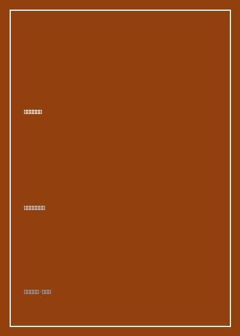

《心理治疗之路》

总体观点
《心理治疗之路》（The Gift of Therapy）凝聚了欧文·亚隆四十余年的临床心理治疗与督导经验。亚隆抛弃了死板僵化的教条式理论框架，将心理治疗回归为两个活生生的人之间极其私密、坦诚且富有创造性的相遇。他提出“治疗师也是旅途中的旅伴”，主张破除传统精神分析中冰冷中立的白大褂幻象，用最纯粹的真诚与同理心建立治疗同盟。
全书围绕四大存在主义终极关切（死亡、自由与责任、存在的孤独、无意义感）展开临床推演，格外强调“此时此地（Here-and-Now）”的强力杠杆效应：来访者在咨询室中与治疗师互动时所展现出的防御、回避、依赖与攻击，正是其外部现实人际关系的即时缩影。通过对咨询室内实时流淌的情感体验进行温柔而精准的觉察与反馈，治疗师得以协助来访者看清自身在人际困局中的主动构造，从而赢回自我选择的自由。
此外，亚隆毫无保留地坦陈了治疗师自身的脆弱、焦虑、职业耗竭与伦理边界，系统性传授了如何善用治疗师自身感受作为探测雷达、如何挖掘梦境的无意识指引、以及如何陪同来访者直面终极死亡恐惧等实战技法。这不仅是一本技术指南，更是一部关于爱、勇气与生命尊严的心理哲学信札。
核心观点
-
1. 破除白大褂幻象：视彼此为人生旅途中的同行伙伴
治疗师并非无所不知的高位诊断者，而是与来访者同样经受生命有限性与孤独考验的凡人。唯有放下权威面具，展现真实的同理与谦逊，深层治愈同盟方能成立。
亚隆在接待一位因严重抑郁而拒绝开口的青年学者时，并未抛出一套套学术术语进行剖析，而是真诚坦陈自己此刻也感到无力与不知所措，这种不加修饰的人性坦白瞬间瓦解了对方的防卫坚冰。 -
2. 此时此地原则：将咨询室内的人际互动当作现实显微镜
人们在咨询室外制造的一切人际危机，终究会原样投影在与治疗师的会谈之中。聚焦当下这一分钟双方的关系流动，是打破惯性防御最直接的临床手术刀。
当来访者抱怨在生活中总是被朋友忽视和冷落时，亚隆直接指出：“注意到你在过去十分钟里从未正眼看过我，且每次我提问你都会看向窗外，这是否也让你身边的朋友感受到了拒绝？” -
3. 觉察治疗师的自身感受：将反移情转化为高灵敏度雷达
治疗师在会面中产生的不适、无聊、烦躁或过度怜悯，往往并非个人偏见，而是来访者无意识向外投射的情感力场，能够作为诊断人际死结的关键探针。
在长达数周的谈话中，亚隆发现自己总是在某位客气礼貌的求助者面前产生强烈的睡意与麻木感，他随即意识到这位来访者正用滴水不漏的礼貌屏障将所有真实情感隔绝在外。 -
4. 直面存在的终极关切：死亡觉察作为生命的催化剂
对死亡与虚无的恐惧潜藏在绝大多数神经症与焦虑症状深处。直接触碰死亡议题不仅不会让人绝望，反而能像一剂强心针，唤醒个体对当下真实生活的紧迫感与珍惜。
一位患有严重控制强迫症的中年高管在直面自己对衰老与猝死的潜意识绝望后，终于卸下了将下属与家庭逼到绝境的微观控制欲，重新体会到自由生活的从容。 -
5. 每一次相遇都是度身定做：摒弃机械僵化的标准化疗程
每一个灵魂都是不可复制的独特宇宙。卓越的心理治疗需要为每一位独特的来访者重新发明一种专属的治疗方法，而不是将其削足适履地塞进固定理论模版中。
亚隆针对一位热衷于文学创作却陷入灵感枯竭的患者，打破了传统的每周坐椅对谈模式，改为允许其每次会谈前朗读一段自己的诗作，并以此为跳板探索潜意识中的自我压抑。
全书结构
-
第一部分：治疗师与来访者的关系
奠定治疗同盟的核心基石，阐释为何真诚相待与此时此地的互动觉察远比刻板技巧重要得多。
详述治疗师如何主动分享自身感受，消除来访者的被审视感，让咨询室成为安全的人际实验场。 -
第二部分：终极存在主义关切的介入
剖析死亡焦虑、自由与责任担当、存在性孤独以及追寻生活意义等深层命题在临床上的化解之道。
以身患绝症患者的生命重构为例，阐述如何引导陷入虚无主义的来访者重建个人的责任边界。 -
第三部分：日常治疗中的具体挑战与策略
提供处理来访者抗拒、阻抗、秘密泄露、家庭牵绊及会谈时间管理等大量极具操作性的临床锦囊。
解析当来访者在会谈最后三分钟突然抛出重磅自杀企图或婚外情秘密时的应对心法与边界设定。 -
第四部分：梦的解析与无意识资源的挖掘
展示如何摒弃弗洛伊德式的符号教条，将来访者的梦境视作未完成的情感体验与当下人际冲突的活生生隐喻。
通过分析来访者反复梦见在空荡大厅中演讲的场景，揭示其对被评价的过度恐惧与渴望被接纳的矛盾冲动。 -
第五部分：治疗师的职业特权与危险防范
讨论治疗师如何面对自身的职业孤独、替代性创伤与全能感膨胀，强调终身接受个人分析与督导的极端重要性。
亚隆坦陈自己曾因过度认同来访者的救世主期许而险些越过职业界限，以此警示后辈保持敬畏与清醒。